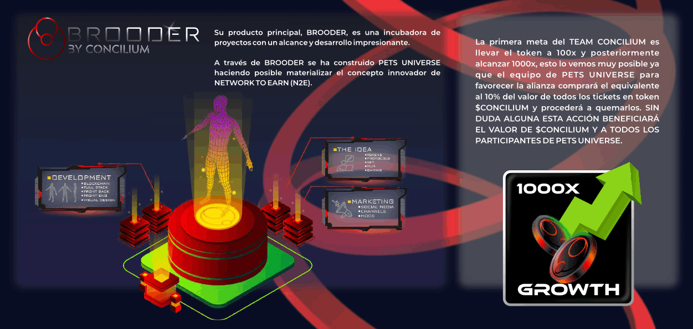
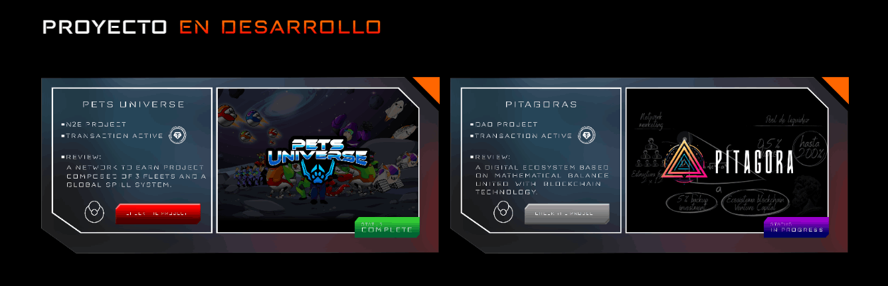
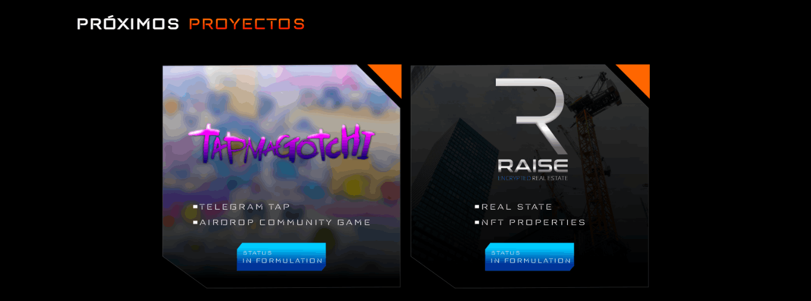

En el mundo de las criptomonedas, el precio o valor de un activo está respaldado por 3 aspectos claves (OFERTA, DEMANDA y HODL) que se mueven dentro de una estructura con su propia órbita, pero estos 3 aspectos también están influenciados por otros factores (macroeconómicos, sentimiento del mercado, TVL, etc.), intentar mantener o estabilizar el precio es como el problema de los 3 cuerpos (teoría científica no resuelta), es como si quisiéramos estabilizar una balanza con 3 platillos, sin embargo, ¿qué pasa si una inteligencia externa influye en toda la estructura?
Si estudiamos el mercado de criptoactivos, como Bitcoin, tiene características que le permiten ser la referencia (inteligencia externa) para otras criptomonedas, permitiéndole tener un punto de equilibrio, sin embargo, su precio es volátil en comparación con cualquier otro mercado que no sea el de criptomonedas, pero comparado con otros criptoactivos es menos volátil, ¿por qué? Porque tiene una mayor intención de HODL, mayor DEMANDA y menor OFERTA.
CONCILIUM es un ecosistema Blockchain disruptivo que busca, más que tener un activo con valor monetario, generar valor intangible en su existencia y evoca la conciliación entre los 3 aspectos claves, ofreciendo al mercado un sistema que los armoniza y pone en funcionamiento que genera beneficios para quienes conforman el ecosistema, inversores, holders y traders.
CONCILIUM incluye un protocolo para inyectar capital externo a la liquidez de su token ($CONCILIUM) más allá de su comportamiento en el mercado, de esta manera garantiza beneficios a los inversores.
Al cumplir con todos los parámetros de CONCILIUM, podríamos lograr el objetivo ambicioso de quintuplicar o multiplicar la inversión por 10, esa es la razón de esta iniciativa, tener un agente conciliador sobre todos los factores que intervienen en la depreciación de un criptoactivo, evitando que su valor caiga, convirtiendo al token $CONCILIUM en una apuesta con un alto grado de certeza.



Jhon Rocha, nuestro Director de Estrategia de Marketing, un arquitecto maestro de la presencia digital y un estratega magistral en el campo del marketing.
Con 8 años de experiencia en la creación de campañas innovadoras y la construcción de marcas poderosas, Jhon fusiona su profundo conocimiento del mercado con su visión vanguardista para llevar a CONCILIUM al centro de atención en el competitivo mundo cripto. Dotado de una mente creativa y una determinación incansable, Jhon es el motor que impulsa nuestra estrategia de marketing, trazando el rumbo hacia el éxito con cada paso audaz que da.
Marcel Corbo, nuestro CEO y visionario detrás de CONCILIUM, posee un espíritu emprendedor que se ha forjado a través de 12 años de inmersión en el mundo del network marketing.
Con una pasión ardiente por la innovación y el avance tecnológico, ha canalizado más de 5 años de su vida en el emocionante universo de las criptomonedas.
Su visión audaz y su mentalidad estratégica lo han llevado a liderar con éxito la creación de CONCILIUM, donde cada movimiento está impulsado por su dedicación inquebrantable a la excelencia y el progreso. Intrépido, visionario y decidido, Marcel es el timonel que guía a CONCILIUM hacia nuevas alturas en el mundo cripto.
Conoce a Franko R., el genio creativo detrás de la estética deslumbrante de CONCILIUM. Como un mago del diseño gráfico, Franko infunde cada aspecto de nuestro proyecto con una combinación perfecta de belleza y funcionalidad. Con una carrera de 12 años como publicista profesional, ha dominado el arte de comunicar visualmente ideas complejas de manera cautivadora. Su pasión por el mundo crypto, combinada con 3 años de experiencia específica en proyectos de este ámbito, lo convierte en un experto en el arte de dar vida y color a las iniciativas más innovadoras. Desde el diseño de logotipos hasta la creación de materiales de marketing, Franko eleva CONCILIUM a nuevas alturas, dotándolo de una identidad visual única y memorable.
In a fleeting world, photographs are like tiny frames capturing life's essence. They freeze moments, preserving emotions and stories for eternity. Like artwork in frames, photos capture the ordinary and make it extraordinary. A smile, a glance, a sunset—they all become chapters in our personal narrative.
Photographers are storytellers. They use frames, light, and composition to craft emotional tales. Each shot is a canvas painted with memories, inviting us to revisit the past. In today's digital age, photos connect us globally, but their essence remains timeless, whether on mantelpieces or screens.
Photos as frames bridge generations. Family albums pass down traditions and legacies. Amid life's chaos, photos offer a pause, a chance to reflect and appreciate. They're the threads weaving our life's tapestry, reminding us of the beauty in the everyday.

AI Website Software